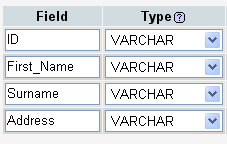
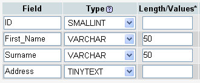
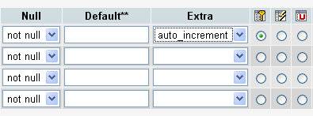
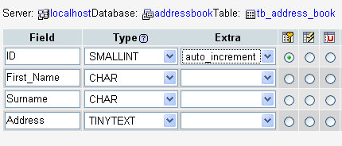

phpMyAdmin Database Fields
You have four Fields in your table from the previous section. Although they are set out in rows in the images, the rows are actually the Columns you saw earlier – the Fields. Each Field needs a name. So go ahead and type the following for your Field names:

So we have given each column in our table a name: ID, First_Name, Surname, and Address. The next thing to set is what type of data will be going in to each field - do you want to store text in this field, numbers, Yes/No value, etc?
To set the type of data going into a field, you select an item from the Type
drop down list. Click the down arrow to see the following list you can choose
from:
A List of the Field Types (opens in a new window - 21K)
As you can see from the image above, there's quite a lot! But you won't use most them. For the values we have in our four fields, we want to hold these Types:
ID – A number, used just
to identify each record. This needs to be unique for each record
First_Name – Text
Surname – Text
Address – Text
If you look at the list, there is an INT but no Number; and there are four different Text Types to choose from. We can use INT (meaning integer) for the numbers, but again, there are a few Integer Types to choose from. And that's leaving out things like float and double. Here's the difference between them, though.
Integer Values
TINYINT Signed: -128 to 127. Unsigned: 0 to 255
SMALLINT Signed: -32768 to 32767. Unsigned: 0 to 65535
MEDIUMINT Signed: -8388608 to 8388607. Unsigned: 0 to 16777215
INT Signed: -2147483648 to 2147483647. Unsigned: 0 to 4294967295
BIGINT Signed: -9223372036854775808. Unsigned: 0 to 18446744073709551615
The signed and unsigned are for minus and non minus values. So if you need to store negative values, you need to be aware of the signed ranges. If you were using a TINYINT value, for example, you can go from minus 128 to positive 127. If you didn't need the minus value, you can go from 0 to positive 255.
For our address book, we have an ID field. We're using this just to identify a record (row). Each record will be unique, so it will need a different number for each. We can set it to one of the INT values. But which one?
If we set ID to TINYINT, then you'd run in to problem if you tried to store more than 255 records. If you used SMALLINT, you'd have problems if you tried to stored the details of friend number 65536. IF you have more than 65 and half thousand friends, then you need a different INT type. We'll assume that you don't, so we'll use SMALLINT.
Text Types
The length for the text types can be quite confusing. The MySQL manual says this about the various lengths that each text type can hold:
TINYTEXT L+1 byte, where L < 2^8
TEXT L+2 bytes, where L < 2^16
MEDIUMTEXT L+3 bytes, where L < 2^24
LONGTEXT L+4 bytes, where L < 2^32
This in not terribly helpful for beginners! So what does it mean. Well, the L + 1 part means, "The length of the string, plus 1 byte to store the value." The translated values for each are approximately:
TINYTEXT 256 bytes
TEXT 64 KiloBytes
MEDIUMTEXT 16 MegaBytes
LONGTEXT 4 GigaBytes
To confuse the issue even more, you can also use CHAR and VARCHAR to store your text. These are quite useful, if you know how many characters you want to store. For example, for a UK postcode you don't need more than 9 characters, and one of those will be a blank space. So there's no sense in setting a postcode field to hold 4 gigabytes! Instead, use CHAR or VARCHAR.
CHAR
You specify how many characters you want the field to hold. The maximum value is 255. For example:
CHAR(10)
This field can then hold a maximum of ten characters. But if you only use 4 of them, the rest of the 10 characters will be blank spaces. The blank spaces get added to the right of your text:
"TEXT "
"TENLETTERS"
VARCHAR
Like CHAR, but the rest of the characters are not padded with blank spaces. The maximum value before MySQL 5.0.3 was 255. After this it's jumped to 65, 535. With VARCHAR, there is also an extra byte that records how long your text is.
For our fields, then, we'll use the following Types:
ID SMALLINT
First_Name VARCHAR
Surname VARCHAR
Address TINYTEXT
So select these from your Types drop down list:

We've only set Lengths for the VARCHAR TYPES. If you leave it blank for VARCHAR, you'll get a default value of 1 character.
The other Field settings we'll take a look at are these:
Null
This is an important field in database terminology. It essentially means, "Should
the field contain anything?" If you set a field to NOT NULL, then you can't
leave it blank when you come to adding records to your database. Otherwise you'll
get errors.
Default
Do you want to add anything to the field, just in case it's left blank when
adding a record? If so, type it in here.
Extra
This is where you can set an auto increment value. This means adding one to
the previous record number. This is ideal for us, as we have an ID field. Then
we don't have to worry about this field. MySQL will take care of updating it
for us.
The three icons are Primary Key, Index, and Unique. Primary keys are not terribly important for flat-file databases like ours. But they are important when you have more than one table, and want to link information. They are set to unique values, like our ID field. An index is useful for sorting information in your tables, as they speed things up. Unique is useful for those fields when there can't be any duplicate values.
So, set a primary key for the ID field by selecting the radio button, and choose Auto Increment from the Extra drop down list:

Your field screen then, minus the parts we've ignored, should look like this:

Bear in mind what we've done here: we've just set up the fields for our table, and specified the kind of information that will be going into each field (the columns). We haven't yet added any information to the table.
Click the Save button on the fields screen. You'll be taken back to the Structure screen. There should be a lot more information there now. Don't worry if it looks a bit confusing. All we want to do is to add one record to the table. We'll then use PHP code to add some more.
In the next part, you'll learn how to add a record to your database table.